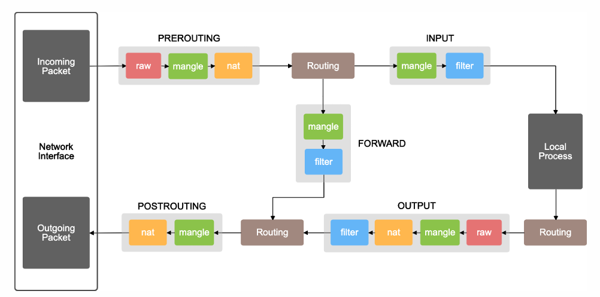
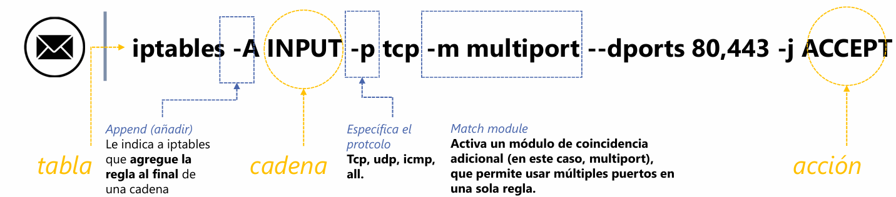

Introducción a iptables y control de tráfico en redes
El siguiente documento presenta una serie de ejercicios prácticos sobre iptables, la herramienta estándar en sistemas Linux para la configuración de firewalls y el filtrado de paquetes. iptables permite definir reglas que controlan el tráfico entrante, saliente y que atraviesa el sistema, organizadas en tablas y cadenas según su función.
Contexto del material
Este conjunto de ejercicios está diseñado para reforzar conceptos fundamentales como:
- El flujo de un paquete a través del sistema (tabla → cadena → acción).
- La función de cada tabla principal: FILTER, NAT, MANGLE, RAW y SECURITY.
- La sintaxis y anatomía de los comandos iptables.
- Opciones comunes para filtrar por IP, puerto, interfaz, estado de conexión y límite de intentos.
- Reglas prácticas para permitir tráfico HTTP, HTTPS, SSH y más, con ejemplos aplicables a entornos reales.
A lo largo de los ejercicios se presentan tanto preguntas teóricas como la construcción de reglas específicas, permitiendo al estudiante familiarizarse con la línea de comandos y comprender cómo se gestiona la seguridad a nivel de red en Linux.
1. Completa los espacios conforme se explica el flujo del paquete.
Cuando un paquete llega al sistema, primero pasa por una tabla, después por una cadena y finalmente se ejecuta una acción.
2. Relaciona cada tabla con su propósito principal.
| Tabla | Propósito principal | Ejemplo de uso (01 palabra o frase corta) |
|---|---|---|
| FILTER | Filtrado de paquete | Bloque el tráfico |
| NAT | Traducción de direcciones | Hace un port forwarding |
| MANGLE | Modificación avanzada de pág | Cambiar cabeceras |
| RAW | Excepciones al seg de conex | Paquete que no deben inspeccionar |
| SECURITY | Aplicación etiquetas de seguridad | Contextos de seg adicionales |

Funcionamiento de las cadenas en iptables
| Cadena | Función | Descripción |
|---|---|---|
| INPUT | Tráfico entrante | Paquetes destinados al propio host. |
| OUTPUT | Tráfico saliente | Paquetes generados por el host. |
| FORWARD | Tráfico reenviado | Paquetes que atraviesan el host (rutado). |
| PREROUTING | Pre-enrutamiento | Modificaciones antes de rutear el paquete (NAT). |
| POSTROUTING | Post-enrutamiento | Modificaciones después del ruteo (NAT). |
Resumen visual del flujo:
- PREROUTING → INPUT (si el paquete es para el host) / FORWARD (si el paquete debe reenviarse) → POSTROUTING
- OUTPUT (paquetes generados localmente) → POSTROUTING
Estas cinco cadenas son las predeterminadas en iptables y permiten controlar el tráfico en cada etapa de su recorrido por el sistema.
3. Anatomía de un comando iptables:
iptables -A INPUT -p tcp -m multiport --dports 80,443 -j ACCEPT
4. Este comando permite:
permitir protocolos HTTP/HTTPS
5. Variables y opciones communes
- a) Limitar intentos por minuto: --limit 5/minute
- b) Filtrar por IP de origen: -s 192.168.0.1/24
- c) Ver solo números sin DNS (ni resolución de puertos): -n
- d) Ver reglas con contadores (paquetes y bytes): -v
6. ¿Qué hace esta regla?
iptables -A INPUT -i eth0 -p tcp -m multiport --dports 22,80,443 -m state --state NEW,ESTABLISHED -j ACCEPT
Permite el tráfico entrante por la interfaz eth0 a los puertos 22, 80 y 443, mientras sea parte de una conexión nueva o establecida.
7. Permitir tráfico HTTP entrante
iptables -A INPUT -p tcp --dport 80 -j ACCEPT
8. Permitir todo el tráfico saliente
iptables -P OUTPUT ACCEPT
9. Permitir SSH solo desde la IP 192.168.1.50
iptables -A INPUT -p tcp -s 192.168.1.50 --dport 22 -j ACCEPT
10. Permitir tráfico TCP entrante a puertos 80 y 443 solo si es conexión establecida o relacionada
iptables -A INPUT -p tcp -m multiport --dports 80,443 -m state --state ESTABLISHED,RELATED -j ACCEPT
11. Permitir tráfico TCP entrante por eth0 a 22, 80 y 443, registrar intentos y permitir solo NEW y ESTABLISHED
iptables -A INPUT -i eth0 -p tcp -m multiport --dports 22,80,443 -m state --state NEW,ESTABLISHED -j ACCEPT
Conclusión y reflexión técnica
Después de trabajar con estos ejercicios, me queda claro que iptables no es solo una herramienta de filtrado, sino un sistema estructurado donde cada tabla y cadena cumple un rol específico en el recorrido del paquete. Comprender la diferencia entre INPUT, OUTPUT y FORWARD, así como el momento en que actúan PREROUTING y POSTROUTING, me permite visualizar mentalmente el flujo de red y anticipar dónde aplicar cada regla. Me doy cuenta de que muchas veces el error no está en la regla en sí, sino en colocarla en la cadena incorrecta o no considerar el estado de la conexión. Este enfoque práctico me ayuda a pensar como administrador de sistemas: anticipar comportamientos, controlar accesos y entender que cada paquete lleva consigo una historia que iptables puede leer y gestionar.